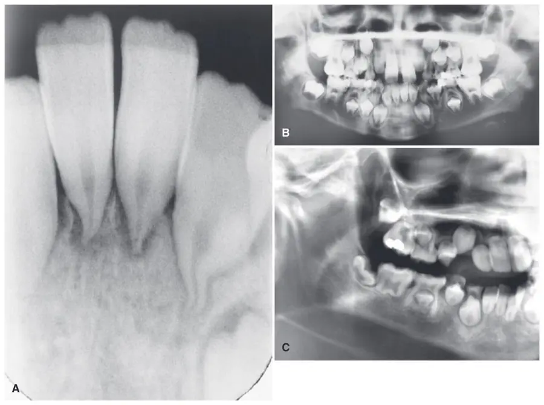
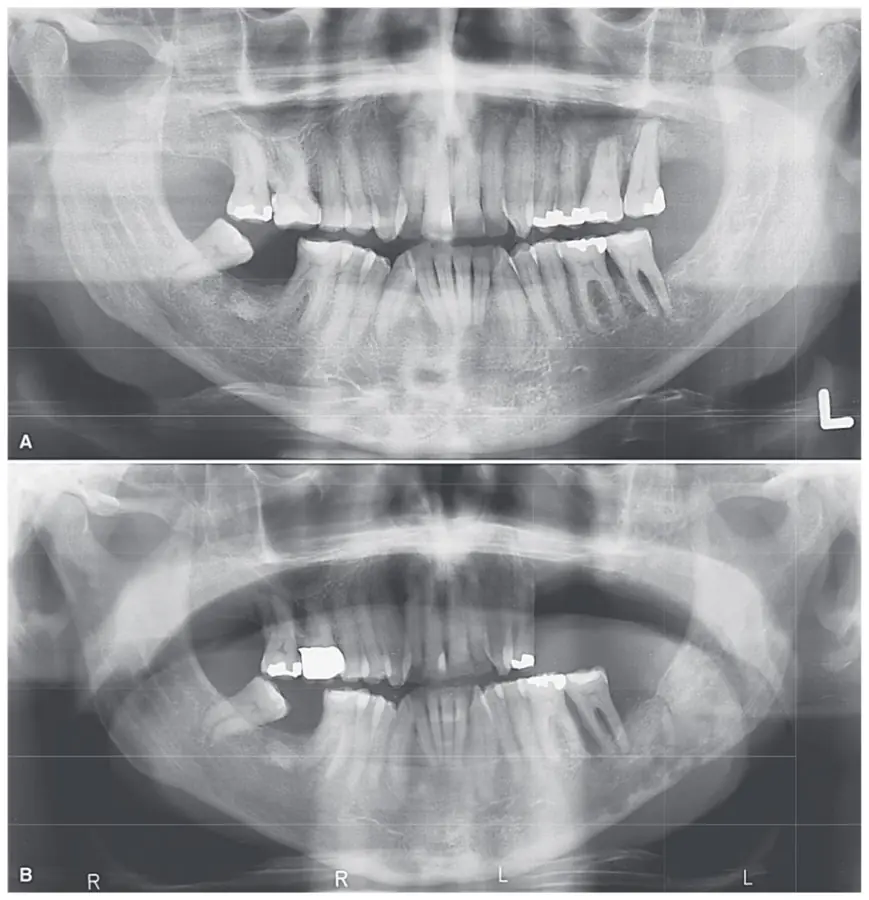

نسخه استخراجشده؛ ترجمه یا تأیید علمی انجام نشده است. وضعیت: captured
«شواهد نیرومندی هست که پرتو یونساز سرطان میسازد —تنها اثر نامطلوب مورد نگرانی از تصویربرداری تشخیصی.»

و دانش ما از کجا آمده؟ از «مطالعات تجربی سلولهای کشتشده و حیوانات، و جمعیتهای انسانی که بهطور تصادفی یا برای مقاصد پزشکی پرتوگیر شدهاند». و این جمعیتها را بشناس:
و چهار ویژگی عمومی سرطان پرتویی:
و یک آستانهی عددی که همهچیز حول آن میچرخد: «شواهد تجربی نشان میدهند خطر سرطان با پرتوگیریهای بیش از ۱۰۰ میلیسیورت بهصورت خطی افزایش مییابد.»
ولی زیر آن آستانه چه؟ «عدم قطعیت بزرگی دربارهی برونیابی این خطرها با پرتوگیریهای کمتر از ۱۰۰ میلیسیورت هست — یعنی محدودهی دوز بیشتر روشهای رادیوگرافی تشخیصی.»
و چرا پژوهش در این محدوده چنین دشوار است؟ سه دلیل:
و پیامدش صادقانه بیان شده است: «این عدم قطعیتها به اختلافنظرهایی در کاربرد این دانش برای تدوین رهنمودها و سیاست حفاظت پرتویی انجامیدهاند.»
پنج بافتی که از رادیوگرافی ماگزیلوفاسیال تشخیصی در خطر سرطان پرتوییاند — هرکدام با یک پنجرهی سنی مشخص:

«بروز لوسمی — بهجز لوسمی لنفوسیتی مزمن — پس از پرتوگیری مغز استخوان قرمز افزایش مییابد.» و در بازماندگان بمب اتمی، خطر لوسمی لنفوسیتی و میلوژنوس حاد و لوسمی میلوژنوس مزمن افزایش یافت.
و پنجرهی سنیاش: «خطر در کودکان بالاترین است، با اوج در حدود سن ۷ سالگی، و بدون خطر قابل نمایش وقتی در ۳۰ سالگی و بالاتر پرتوگیر شوند.»
و یک تفاوت زمانی مهم: «دورهی نهفتگی لوسمیهای پرتویی بسیار کوتاهتر از دورهی نهفتگی دههای تومورهای توپر است. لوسمیهای پرتویی بهکوتاهی دو سال پس از پرتوگیری بروز میکنند، با میانهی نهفتگی ۶ تا ۸ سال.»
«بروز کارسینومهای تیروئید — عمدتاً کارسینوم پاپیلاری — در انسانها پس از پرتوگیری افزایش مییابد. زنان و مردان به یک اندازه مستعدند.»
و پنجرهی سنیاش: «خطر سرطان تیروئید وقتی در ۱۹ سالگی و کمتر پرتوگیری رخ دهد حاضر است و بالاترین حالت وقتی پیش از ۴ سالگی باشد. هیچ خطر قابل کشفی وقتی پس از ۲۰ سالگی پرتوگیر شوند نیست.»
«بروز تومورهای غدهی بزاقی، هم خوشخیم و هم بدخیم، هم در بیماران درمانشده با پرتو برای بیماریهای سر و گردن و هم در بازماندگان ژاپنی بمب اتمی افزایش یافت.» و کدامها؟ «بیشتر تومورها خوشخیماند، با تومور وارتین بهعنوان شایعترین. و تومور موکواپیدرموئید شایعترین تومور بدخیم بود.»
«پستان زنانه بهشدت به سرطان پرتویی حساس است. مطالعات چند کوهورت یک رابطهی خطی میان خطر و دوز در انسانها نشان میدهند.» و پنجرهی سنیاش: «خطر وقتی پیش از ۲۰ سالگی پرتوگیری رخ دهد حاضر است. هیچ خطر قابل سنجش مرتبط با پرتو در زنانی که پس از ۵۰ سالگی پرتوگیر شوند نیست.»
«کودکانی که پرتودرمانی سر گرفتند — با میانگین دوز مغز میانی حدود ۱ گری — در خطر افزایشیافتهی تومورهای مغزیاند، عمدتاً مننژیوم و گلیوم.»
و دو نهفتگی متفاوت: «مننژیومها — تومورهای خوشخیم مننژ — پس از دورهی نهفتگی طولانی ۱۷ تا ۲۰ سال پدید میآیند، در حالی که گلیومها نسبتاً زودتر، ۵ تا ۹ سال، رخ میدهند.» و «خطر گلیوم وقتی در سن ۵ سالگی و کمتر پرتوگیر شوند بالاترین بود».
«جهشهای DNA که در سلولهای زایا رخ دهند میتوانند بالقوه بهصورت بیماری در فرزندان فرد پرتوگیر بروز کنند.» و این اثرات «در مگس سرکه و ذرت بهخوبی مطالعه شدهاند».
ولی در انسان؟ «هیچ شواهدی از اثرات وراثتی پرتویی در انسانها نیست. مطالعات فرزندان بازماندگان بمب اتمی هیچ شواهدی از بیماری مرتبط با پرتوگیری مادری یا پدری نشان نمیدهند.»
و نتیجهگیری عملی: «بنابراین هیچ خطری از اثرات وراثتی پرتویی در انسانها نیست، و هیچ منطق علمی برای محافظت گنادها از پرتو در رادیوگرافی تشخیصی وجود ندارد.»
چرا حساستر از بزرگسال؟ بیشتر سلولهای رویانی نسبتاً تمایزنیافته و بهسرعت میتوتیکاند. اثرها به دوز و سن بارداری بستگی دارند و همگی واکنش بافتی با آستانهاند:
این آستانهها ۱۰٬۰۰۰ تا ۳۰٬۰۰۰ برابر دوز جنینی رادیوگرافی دندانوفکوصورتاند؛ حتی پرتو زمینهی طبیعی در نُه ماه بارداری حدود ۰٫۵ تا ۱ میلیگری به جنین میرساند. پس تصویربرداری دندانوفکوصورت در بارداری ایمن است.
آسیب پرتو به عدسی آبمروارید میسازد، یعنی کدر شدن عدسی، و بیشتر از نوع سابکپسولار خلفی یا کورتیکال. ICRP آستانه را برای پرتو کمLET ۰٫۵ گری و NCRP برای آبمروارید مختلکنندهی بینایی ۱ تا ۲ گری برآورد میکند. دوز عدسی در معاینات دندانوفکوصورت ۰٫۰۲ تا ۰٫۴ میلیگری است، یعنی دستکم ۱۲۵۰ برابر کمتر از محافظهکارانهترین برآورد.